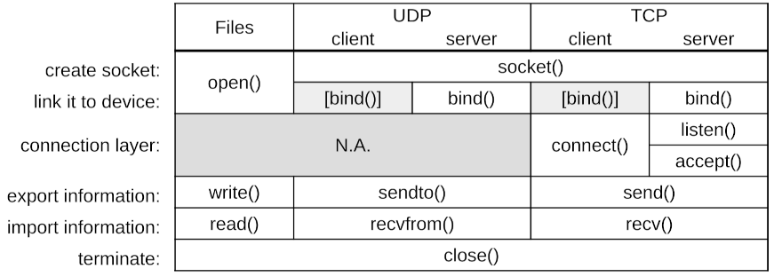

Lab 2: Syscalls
Introduction
The purpose of this Lab is to illustrate Lecture 5 about syscalls. It consists of four parts:
-
We start smoothly by looking at pathnames and access rights.
-
We then move from file (library-)function calls as you have seen in the C bootcamp, to file syscalls.
-
The third part deals with network syscalls, creating a client-server toy architecture, first at UDP and then at TCP level.
-
Finally, we merge all this, creating a simple client-server file exchange application.
Regarding group work organization, here are a few guidelines, but feel free to organize as better suited for you:
- do part 1 together, either on two computers (two login; maybe one can then
sshto the other to test access rights), or simply both on the same computer (only one login); - for part 2 (files), maybe one can do the read part, while the other does the write part;
- for part 3 (network), we think it's better that one does both clients (UDP, then TCP), and the other does both servers; we do not recommend that one does whole UDP, while the other does whole TCP, because both codes are quite similar; thus it's more efficient to do TCP client code once UDP client had been made (and similarly for servers) rather than doing UDP on one side and doing TCP on the other independently.
1 Pathnames and access rights
This part refers to slides 22 to 25 of Lecture 5.
Preliminary note: the point of this exercise is not simply to answer the questions or blindly execute the given commands (both are usually trivial), but rather to truly understand what is happening and why a particular result is obtained. [end of note]
1.1 Moving around directories
So first open a "Terminal". This "terminal" runs in fact a "Unix Shell", which is a command interpreter (infinite loop waiting for some command). It interprets these commands with respect to a given position in the filesystem, i.e. w.r.t. a given directory. Let's see where it is with the pwd command (print working directory).
pwdIf you did it from scratch on the EPFL VMs, you should be either in your home directory or in your Desktop directory (depending on how/where-from you launched the terminal).
Let's now move to another, more appropriate directory. This is done with the cd command (change directory).
cd ~/Desktop/myfilesor anywhere else below myfiles where you have cloned your repo.
(Note: The ~ (“tilde”) is a shortcut for $HOME, i.e., your home directory.)
If you'd like to create a new directory, this is done with mkdir (make directory).
1.2 Copying and listing files
The Unix Shell command to copy a file is cp.
Copy the poem1.txt and poem2.txt provided files from your provided/data directory to your home folder with a single cp command. (man cp can help.)
Check they do exist using the ls (list) command:
ls -l $HOMENote:
Learn how to take advantage of the mouse and the keyboard in your environment:
to copy the previous commands, instead of typing it yourself on the keyboard, use the mouse’s “copy-paste” function: simply select with the mouse what you want to copy (for example, double-click the left button for a word, triple-click for the entire line), then click the middle button where you want to paste what has been
selected. In short, with just 4 clicks, you’ve entered this command. Simple, isn't it?
[end of note]
1.3 Basic commands and various file operations
Using the Unix command mkdir, create a subdirectory named test in you home directory.
Then, if you're not (pwd) in the provided/data directory of your repo, go there.
-
What is the difference between the following two commands:
cp poem1.txt ~/test/f1.txtand
mv poem1.txt ~/test/f1.txt?
man mvcan help.Do at least one of these two commands.
If you did the second command, retrieve the lost file using git:git restore poem1.txtNote: Learn how to take advantage of the mouse and the keyboard in your environment:
instead of "copy-pasting", you can also use the command history: in the terminal, press the up arrow. The previous command appears. Then change thecpinto amvand press 'Enter'. Simple, isn't it? [end of note] -
What information is returned by the command
which ls? And bywhich man? What does it represent? -
What does the command
ls -l *.txt ~/test/*.txtgive you? What are all these informations? -
When using special characters (
*,?, or[ ]), it is important to understand that it is the shell (i.e., the command interpreter) that substitutes the arguments before sending the list of arguments to the command. This means that the command only receives arguments that have already been evaluated by the shell. But how can you test this?-
echosimply displays its arguments. The name comes from the fact that the command returns its arguments as an echo, without modification:echo 1 2 3 1 2 3 echo 'Hello everyone!' Hello everyone! echo SHELL SHELL echo $SHELL /bin/bashIn this last example, the shell replaces the
$SHELLvariable with its content. Theechocommand does not modify its arguments, it already received the content of the$SHELLvariable.echo *.txt poem1.txt poem2.txtIn this last example, the shell replaces
*.txtwith all matching files, then runs theechocommand with the found arguments. Theechocommand therefore receives"poem1.txt poem2.txt"as arguments and does not modify its arguments itself. -
touchmodifies the access date and modification date of each specified file. Files that do not exist are created. This can thus be used to create empty files.ls -l toto ls: toto: No such file or directory touch toto ls -l toto -rw-r--r-- ....SOMETHING..... toto rm totoIn this example, we created and then deleted the file
toto. BE CAREFUL! Thermcommand (remove) is VERY DANGEROUS: once "rmed", a file can ABSOLUTELY NOT be retrieved. It's gone forever!
Now:
-
Go to the
testdirectory previously created and create there several files starting withf, and at least the three files (not directories!)f1,f2, andf4(that’s a4indeed, not a typo).To make things clearer later, put something different in each of these files (either using an editor; or simply using the
catcommand; for examplecat > f1, then type something and end withCtrl-D).What is the result of the command
ls ???
(lsfollowed by two question marks?)What is the result of the command
ls f[123]?What is the result of the command
cat f[123]? (/!\ no>sign here) -
Create a few additional files:
bar,a.txt,zulu, ... -
Test the wildcard characters:
- Print all filenames using
echo; - List all the files which name starts with an
a; - List all the files which name is exactly 5 characters long;
- Print all filenames using
-
-
Running the command
ls -lproduces the following result for a certain user somewhere:-rw-r--r-- 1 dupont RGpolice 75180 Mar 28 2023 misc drwxr-x--x 2 dupond RGpolice 4096 Mar 14 2023 somethingi. Is
misca file or a directory?
Same question forsomething.
ii. Who (user and group) owns these files/directories?
iii. What command must the owner run to give everyone write permission tomisc? (manchmodcan help.)
iv. What can users in theRGpolicegroup not do withsomething?
v. What is a random user (not in theRGpolicegroup) allowed to do with thissomething? -
What is the special characteristic of files whose names begin with the character
.?
To discover this, run the following commands:ls ~then
ls -a ~What difference do you notice?
-
Working with your group-mate (or one of your neighbors), grant them read permissions on your
~/testdirectory.
Then try several scenarios: now you can see it, now you don't; now you can modify a given file in it, etc.Finally, remove all these additional permissions.
-
Note: for this part of the exercise, which covers symbolic links (also known as “shortcuts” or “aliases”), if it is not already the case, you must go somewhere else other than
myfiles(since you cannot create symbolic links withinmyfiles), typically go in~/tests/.Then create a symbolic link:
ln -s poem1.txt name2.txtor if you're not in the
~/tests/directory:ln -s ~/test/poem1.txt name2.txtYou can replace
~/test/poem1.txtby any name of a file that exists somewhere (here it’s an absolute path, but you can also use a relative path).
You can also choose another name thanname2.txtfor the alias.Check the result:
ls -lFname2.txtis a symbolic link to the filepoem1.txt. This is very useful for avoiding the need to copy files (size, integrity, etc.) while still providing a local access to them.Note that you can create symbolic links to any file you have access to. For example:
ln -s /usr/share/man/man1/ls.1.gz lsmanpageVerify by reading this new link:
gzip -cd lsmanpage | nroff -man | moreIn your current working directory, create two subdirectories:
rep1andrep2.In the
rep1subdirectory, create the filefoo.Then, in the
rep2subdirectory, create a symbolic link namedbarpointing to thefoofile in therep1subdirectory.Now modify the contents of the file
rep1/foo(using thecatcommand or an editor), then read the filerep2/bar. What do you see?Next, modify the file
rep2/bar, then read the filerep1/foo.
What do we see?Finally, delete the file
rep1/foo, then read the filerep2/bar. What do you see? List (ls -l) the contents of therep2directory. -
Finally, a short exercise on filenames (and their aliases):
- List the contents of the
/etcdirectory; - List everything in the
man1subdirectory of themansubdirectory of the parent directory of/usr/share/fontsthat starts withrm.
- List the contents of the
2 Files
2.1 From library functions to syscalls
This part refers to slides 30 to 53 of Lecture 5.
2.1.1 File library functions
Let's start from former exercises 10 and 11 in week 1. If you (nor your teammate) didn't do it, well... it's time to do it (one for you and one for your teammate).
Import your writing and your reading codes in your done/Lab2/Step2 directory and commit and push these two files.
What are the library functions you used to create, write, read and close a file?
This is the usual (and normal) way to proceed with files in C.
However, under the hood, those functions call "system calls". This is what we will now explore.
Before moving forward, we first need to transform these code a bit (one of the teammates can work on one file and the other on the other file):
-
typedefa type namedmyFileto be an alias toFILE*and change all theFILE*in your code by thismyFile; -
transform the
fopen()call intomy_fopen()and define thismy_fopen()function, for now just simply callingfopen();my_fopen()return type ismyFile; -
at each step, double check it compiles and runs properly;
-
similarly transform
fclose()call into a call tomy_fclose(); -
then transform either the
fprintf()or thefscanf()call into respectively:my_write(myFile output, const char* name, unsigned int age); my_read(myFile input, char* name, unsigned int* p_age);it's up to you to choose the most appropriate return type corresponding to your code (typically either
voidorint);
If you didn't do it yet, double check everything compiles and runs properly.
Commit and push this step.
2.1.2 Write your own syscalls
We will now transform our my_...() functions so as to directly do the syscalls, rather than going through library functions.
First transform the myFile type to simply be an int (this will be the "file descriptor").
Then transform my_fopen() not to use fopen() anymore, but to use the open() syscall.
man 2 open can help.
For this simply map (with a if) the fopen() modes you use to the corresponding open() flags (I mean: we don't ask you to consider all possible fopen() modes, only the two you use in your two programs).
If you want to do intermediate compilations (recommended), simply comment out the body of your other my_...() functions (which won't compile anymore due to the myFile type change).
Similarly transform my_fclose() to use close() syscall.
man 2 close can help.
Then transform my_fwrite() and my_fread() to use write() and read() syscalls respectively.
For these, create a temporary buffer of bytes, allocated at the proper size. snprintf() and sscanf() may help
(man snprintf or this page).
my_fread() is a bit more tricky since we don't know how much we have to read (the name may be long or short, the age can be 1 or 3 digits). To deal with this, we propose:
- allocate a buffer to the maximum possible read size (remember max name size was 1024 in the exercise, and an age is at most 3 digits; and don't forget the whitespace in between, nor the
'\n'(nor the'\0')); - remember the file offset before
read(); read()the buffer-size amount of bytes;- search for the first '\n' in the buffer (
man memchrmay help); - reset the file offset to the corresponding position just after this first
'\n'; - fill the name and the age from the buffer (
man sscanfmay help).
If you didn't do it yet, double check everything compiles and runs properly.
Commit and push this step.
2.1.3 [optional] Look at the real code of library functions
So congratulations! You basically wrote your own "library" functions (the aim of which is to provided to the programmers higher level and easier abstractions than the low-level syscalls).
If you'd like to, let's have a look how it is done in reality, e.g., in fread().
Things are in fact a bit more complex in real life. For instance the glibc version of fread():
- prepare and check many things;
- handled some buffered refill;
- calls POSIX read();
- which makes the actual kernel read syscall.
Here is the code of fread() in the glibc (line 44). It's thus simply an alias to the _IO_fread() function, which doesn’t directly make a system call. Instead, it reads data via the buffered I/O internals of glibc. The actual disk read happens further down, inside the FILE stream buffering and the POSIX read() wrapper:
_IO_fread() calls _IO_sgetn(), which fetches data from the internal buffer or refills the buffer from the OS;
when the buffer needs to be refiled, glibc invokes the underlying file descriptor’s read operation (ultimately read(fd, buffer, length)) via its read() wrapper implemented as __libc_read() (click to see the code).
SYSCALL_CANCEL() is a macro that expands to the actual syscall instruction on the corresponding architecture.
2.2 File descriptors and Concurrent access
2.2.1 Two processes read the same file
Now modify your read code to add, in the main(), a break after each name+age read. For instance:
puts("Press enter to continue");
const int c = getchar();Create (e.g., with your write code) a data.txt which contains several lines (let's say more than 4).
Open a least two terminals (or tabs) and launch at least two read processes (launch you read program at least twice, in different terminals/tabs).
Have one of the two process read a few lines; then go to the other and make it read further. Where does it read? What do you conclude about the file descriptors of each process?
Finish the two processes.
Then edit again your read code and make it print the file descriptor received from my_fopen().
Run at least two processes again. Is is what you expected?
2.2.2 What are file descriptors?
This part refers to slide 47 Lecture 5 and aims to go a bit deeper with the notion of "file descriptor".
At the highest level, file descriptors are simply integers.
0 stands for stdin, and 1 for stdout. Try for instance:
int main()
{
const char* s = "Some message to stdout\n"
write(1, s, strlen(s));
return 0;
}But what is hidden behind this integer?
Have at least three terminals (or tabs). In two of them, relaunch two read process (on data.txt as you did earlier).
On the third terminal/tab, find their process-id (their "number") using
pgrep -a file_readYou have to change "file_read" by the actual name of your program (the one you launched twice).
Then assign those two numbers to two variables; let's say p1 and p2. So for instance, if pgrep gave you:
541598 ./file_read
541607 ./file_readthen do (NO SPACE!):
p1=541598
p2=541607Double check with:
echo "p1=$p1 p2=$p2"Now let's have a look at their file descriptors:
ls -l /proc/$p1/fd /proc/$p2/fdSee how file descriptor 3 is in fact a soft link to the file that is read. Actually
cat /proc/$p1/fd/3should give you the content of your data.txt file.
Now, what does the process know about its file descriptor?
In slide 47 of lecture 5, it's said that a file descriptor refers to an actual file (we saw it above) and an offset.
In fact, a file descriptor refers to more than that.
In a process, each file descriptor (integer) refers to a file descriptors table in the kernel, which is an array of struct file.
Let's see that for one of our processes:
fd=3
cat /proc/$p1/fdinfo/$fdpos: is the offset slide 47 refers to. Let's do a few read in one of the two processes (hit enter a few time), and compare the pos field of the two processes:
cat /proc/$p1/fdinfo/$fd /proc/$p2/fdinfo/$fd | grep 'pos:'You should see they are not the same.
So, although /proc/$p1/fd/3 refer to the same file, the file descriptor 3 in each of the two processes does not refer to the same struct file in the kernel.
This is what was meant in lecture 5 by "each process obtains it's own file descriptor". It's not, of course, about the value of that integer (3 in both cases above), but about what it refers to. This is handled by kernel internals as we will see in the OS part of the course.
[optional] If you want to know more about struct file and what fdinfo, please read further; otherwise skip to the next section "2.2.3 Concurrent read/write".
fdinfo provides the following information:
posis the position in the file (the offset), as we have just seen;flagsdescribe the mode used toopen()the filemnt_idis the "mount point", where the file actually "shows up" in the directory hierarchy; more about mount point will be explained in the OS part of the course and in Lab 4;inois the "inode number"; an inode is the actual data structure used to represent a file in a Unix filesystem; more about inodes will be explained in the OS part of the course and in Lab 4.
The struct file data structure in the Linux kernel can be seen there:
https://github.com/torvalds/linux/blob/master/include/linux/fs.h#L1259
The pos fields corresponds to:
https://github.com/torvalds/linux/blob/master/include/linux/fs.h#L1281
The flags to:
https://github.com/torvalds/linux/blob/master/include/linux/fs.h#L1266
mnt_idis a bit more indirect: its real_mount(f_path.mnt)->mnt_id
https://github.com/torvalds/linux/blob/master/include/linux/fs.h#L1272,
https://github.com/torvalds/linux/blob/master/include/linux/path.h#L9,
https://github.com/torvalds/linux/blob/master/fs/mount.h#L87.
(real_mount() is there:
https://github.com/torvalds/linux/blob/master/fs/mount.h#L114
)
And ino is also a bit more indirect, stored in the corresponding inode: it's f_inode->i_ino:
https://github.com/torvalds/linux/blob/master/include/linux/fs.h#L1265,
https://github.com/torvalds/linux/blob/master/include/linux/fs.h#L786
2.2.3 Concurrent read/write
This part refers to slides 49 to 51 of Lecture 5.
Now open/use again two terminals/tabs. In the first one, launch the read process, and read, let's say, two records. In the second one, launch the write process, and write at least three new records, and finish that write process. Then proceed with reading again: what does it read?
You can also follow the respective file offsets in a third terminal:
pgrep -a file_read
pgrep -a file_write
p1=.... # put here the read process id
p2=.... # put here the write process id
# Then periodically do:
cat /proc/$p1/fdinfo/$fd /proc/$p2/fdinfo/$fd | grep 'pos:'2.2.4 Concurrent delete/read
This part refers to slide 52 of Lecture 5.
Create a new C file, named file_delete.c which simply deletes the file data.txt once the return key has been hit:
printf("Press enter to delete file \"%s\"\n", filename);
const int c = getchar();man unlink can help.
At the end, inform if deletion was successful or not.
Once this file compiled, use again two terminals/tabs. In the first one, launch the read process, and read one record. In the second one, launch the delete process. Launch the deletion (hit return key) before you read all the records with the other process. Double check that the file is indeed delete once the delete process is over:
ls -l data.txtThen proceed with reading again: does it work? (although the file is indeed deleted!)
Before the read process is over, look at its file descriptors:
pgrep -a file_read
p1=.... # put here the read process id
ls -l /proc/$p1/fdYou should see that it indeed still points to a file... ...that is delete (it's written at the end).
3 Networks
Let's now move to the network syscalls.
This part refers to slides 2 to 21 of Lecture 5.
For this, you will:
- create a socket layer for network communications:
socket_layer.handsocket_layer.c; - use that layer to create a dummy UDP client-server, just to see/create a very simple example:
udp-test-client.candudp-test-server.c(to be created); - use that layer to have an actual file exchange client-server (next section).
3.1 Socket layer
We here focus on the transport layer (UDP), simply using standard Unix sockets in C to provide the basic functions required for network communication in this Lab. There are provided in socket_layer.[ch]:
get_udp_socket()to obtain a network socket for communication, specifying its waiting time ("timeout", in seconds);get_server_addr()to obtain the address, in the "internal object" sense (struct sockaddr_in), of a given IP address and port;bind_server()to associate a network communication (external representation: IP address, port) with a network socket (internal representation).udp_server_init(), to initialize a network communication over UDP;udp_read(), to create a call that reads the active socket once and stores the output inbuf;udp_send()to send a response message.
Most of these functions are simply interfaces to sys/socket.h C syscalls socket(2), socket(7), setsockopt(2), bind(2), recv(2), recvfrom(2) and sendto(2). We strongly recommend you have a look at the corresponding man-pages. You will also need to look at inet_pton(3), htons(3) and close(2).
Note that with the UDP network protocol, there is no guarantee that messages will be delivered. If the server response has not arrived within the allotted time (which is set using the get_udp_socket() function from socket_layer), consider the request to have failed (and return ERR_NETWORK).
To send requests to the server, use the sendto() function (man sendto). To read requests received back from the server, use the recvfrom() function (man recvfrom).
A few tips:
- read the documentation of the functions (in
socket_layer.h) before implementing them; - the port number needs to be converted using
htons()for portability; - you can safely cast a
struct sockaddr_in*to astruct sockaddr*, and vice versa.
3.2 First simple test
3.2.1 Test framework
Test your socket_layer implementation by creating two simple programs (see detailed usage examples below):
-
a client (
udp-test-client.c) that:- asks for a
unsigned int(onstdin, see example below); - sends it (over UDP) to
CS202_DEFAULT_IP, portCS202_DEFAULT_PORT; - waits for a reply and prints it;
- and properly terminates.
- asks for a
-
a server (
udp-test-server.c) that:- waits for connections on
CS202_DEFAULT_IP, portCS202_DEFAULT_PORT; - convert received content to an
unsigned int; - adds 1 to it;
- send this new value back to the sender;
- should exit properly in case of read error.
- waits for connections on
Unless errors, the server never terminates, as it may have to serve several clients/requests.
3.2.2 Example
This is just an example. You are completely free to code the client and the server the most appropriate way for you (to understand and to debug) provided that they fulfill the two 4-items bullet lists above. In particular, you're free to choose the messages you'd like to be displayed on the terminal.
Server (in one terminal):
./udp-test-server
Server listening on 127.0.0.1:1234
### [AFTER THE CLIENT INTERACTION BELOW]
Received message from 127.0.0.1:47601: 213
Sending message to 127.0.0.1:47601: 214
...Client (in another terminal):
./udp-test-client
What int value do you want to send? 213
Sending message to 127.0.0.1:1234: 213
Received response: 214You can launch the client several times, with different values; even launch several clients at the same time (use several terminals/tabs).
Terminate the server with Ctrl-C once done.
3.2.3 Use Wireshark to debug
Use Wireshark to debug your code.
Try many clients at the same time:
for i in $(seq 15); do echo $i | ./udp-test-client > log-$i 2>&1 & doneWhat happens? (maybe nothing particular, actually)
Next Lab (Lab 3) will make more extensive use of Wireshark.
3.3 TCP
Now we have an UDP client-server architecture, let's try to make a TCP one.
3.3.1 Socket layer
tcp_server_init()
In a file socket_layer.c, define the following two functions:
-
get_tcp_socket()to obtain a network socket for TCP communication; seesocket(2)man-page; useAF_INETandSOCK_STREAM; -
tcp_server_init()function (see its prototype insocket_layer.h) which:- creates a TCP socket;
- creates the proper server address and binds the socket to the address (remember
bind_server()); - then starts listening for incoming connections (see
listen(2)); - returns the socket id.
Whenever an error is encountered, this function prints an informative message on stderr (see perror(3)), closes what should be, and returns ERR_NETWORK. Sockets must be closed using close(3).
tcp_accept()
The tcp_accept() function (to be defined also in socket_layer.c) is simply a (one line of code) frontend to the accept(2) function.
Make a distinction whether cli_addr is NULL or not.
If not, create a dummy socklen_t variable to be used as addr_len arguments of accept().
The tcp_accept() function returns the return value of accept().
tcp_read() and tcp_send()
Similarly, tcp_read() and tcp_send() are also frontends to recv(2) and send(2) functions, respectively. They return either ERR_INVALID_ARGUMENT if they received an improper argument, or ERR_NETWORK if the syscall failed.
3.3.2 Simple test
Test your implementation by creating two simple programs similar to the ones made for UDP:
-
a client (
tcp-test-client.c) that:- asks for a
unsigned int; - sends it (over TCP) to
CS202_DEFAULT_IP, portCS202_DEFAULT_PORT; - waits for a reply and prints it;
- then properly terminates;
- asks for a
-
a server (
tcp-test-server.c) that:- waits for connections on
CS202_DEFAULT_IP, portCS202_DEFAULT_PORT; - convert received content to an
unsigned int; - adds 1 to it;
- send this new value back to the sender;
- should exit properly in case of errors.
- waits for connections on
Unless errors, the server never terminates, as it may have to serve several clients/requests.
Notice that in the server code, you indeed have to create two sockets:
- one (called "passive socket") to listen to incoming requests from clients; this is the one coming from
tcp_server_init()before the server main loop; - others (called "active sockets") to communicate with each new client; these are the ones coming from each
tcp_accept()in the server main loop; in our simple test case here, we will have blocking client communications: open only one active socket in the server main loop; if more than one clients are connecting the server, the first one will be served first, the others waiting for next round of the server main loop (there is nothing special to be done on your side for this, simply handle only one active socket in your loop).
3.3.3 Example
Server (in one terminal):
./tcp-test-server
Server listening on 127.0.0.1:1234
Received message from 127.0.0.1:49610: 42.
Sending message to 127.0.0.1:49610: 43.Client (in another terminal):
Connected to 127.0.0.1:1234
What int value do you want to send? 42
Sending message to 127.0.0.1:1234: 42
Waiting for its reply.
Received reply: 43Notice, in the above server example, the two ports: listening port ("passive socket") 1234 and communicating port ("active socket") 49610 (this might change).
You can launch the client several times, with different values; even launch several clients at the same time (use several terminals/tabs).
Terminate the server with Ctrl-C once done.
4. Put it all together
Let's now try to send a file from a client to a server over TCP.
Copy your client and server files into new ones (e.g. send_file and get_file).
The client:
- ask for a filename and checks if it exists;
- opens the connection to the server;
- send the filename to the server in the format "
FILE:" then the filename, then'\0'(sends a'\0'); - then sends the file size;
- then sends the file content in batches of 1 KiB (except the last one which is contains only the remaining bytes);
- closes the connection.
The server:
- waits for a filename (in the above described format);
- waits for a size;
- loops to get as many bytes as requested, by packets of 1 KiB;
- stores the file locally with the provided filename (overwrite);
- loop again.
Important point
You need to make sure that the two ends of the communication will never get stuck waiting for each other at the same point in time (this would lead in a "deadlock").
However, when sending several messages using TCP, the boundaries of these messages get lost. For instance, if you use a TCP socket to transmit "Hello" and "Goodbye" as two separate messages, the receiver may interpret this as one single message: "HelloGoodbye". This is because all data transmitted using TCP get "serialized" into a single byte-stream.
You thus need to construct your messages in a way such that you can
deserialize the byte-stream back to the original messages. You can
for instance make use of an appropriate delimiting character. For
instance, if we know that the character '|' can never be part our
message, we can transmit "Hello", then "|", then "Goodbye" to make the
remote end (who may thus receive "Hello|Goodbye" altogether)
understand that those are two different messages. In this case, the
only role of '|' is that of a delimiter.
If there is no character that can act as a delimiter for our protocol, you may add headers containing meta-data about the following message. These headers can be then used by the other end to deserialize the messages.
To keep this exercise simple, we simply designed it in a two messages passing: first the size, then the content. But an issue may happen if the file sent starts with some digits. We thus propose you to add a simple delimiter character at the end of the size message.
Similarly, to know the exact end of the file content you can either make use of its size information, or if you find it simple, could have a way to explicitly delimit the end of the file (otherwise the next "FILE: " message may still be considered to be part of a former file), for instance to add a simple delimiter string, e.g. "<EOF>". If may be worth anyway to double check for the size of the file content.
5. Conclusion
You might have noticed the similarities between file syscalls and network syscalls:
- communicate via sockets;
- socket creation:
open()syscall for files,socket()andbind()for networks;
notice: 1.open()for files does both: it creates the socket and "binds" it to the actual file in the filesystem;
2. network clients do indeedbind(), even if not explicit: either insendto()or inconnect(); - information exchange:
read()orwrite()syscalls for files,recv(),recvfrom(),send()orsendto()syscalls for networks; - communication termination:
close()syscall, for both.
This is the power of abstractions!
The TCP protocol having a higher level (connection-oriented), it requires more actions: listen(), connect() and accept().
Here is a recap table:
